Siguiente: Formación de la imagen Subir: Correspondencia entre puntos claves Anterior: El algoritmo de árboles Índice General
Sean  y
y  dos imágenes sobre las cuales se quieren buscar correspondencias. Consideremos 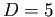 con
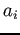 un punto del conjunto de puntos claves detectados en
dos imágenes sobre las cuales se quieren buscar correspondencias. Consideremos 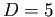 con
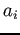 un punto del conjunto de puntos claves detectados en  ,
,  el total de puntos claves detectados en
el total de puntos claves detectados en  , 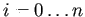 el vector caracterÃstico asociado al punto y de forma similar para la imagen
, 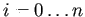 el vector caracterÃstico asociado al punto y de forma similar para la imagen  . Para cada , se seleccionan los dos mejores puntos claves candidatos
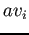 y
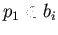 cuyos vectores de caracterÃsticas asociados a cada uno representan las distancias euclÃdeas mÃnimas 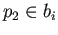 y 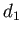 respectivamente respecto a . Luego, si se cumple la proporción
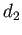 la coincidencia es rechazada.
El valor de
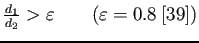 fue seleccionado de acuerdo al estudio llevado a cabo por Lowe (39) que afirma que se alcanzan a eliminar un 90% de falsas coincidencias mientras se descartan sólo un 5% de buenas coincidencias, resultando en el valor más apropiado.
. Para cada , se seleccionan los dos mejores puntos claves candidatos
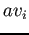 y
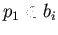 cuyos vectores de caracterÃsticas asociados a cada uno representan las distancias euclÃdeas mÃnimas 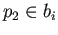 y 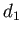 respectivamente respecto a . Luego, si se cumple la proporción
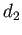 la coincidencia es rechazada.
El valor de
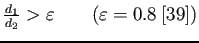 fue seleccionado de acuerdo al estudio llevado a cabo por Lowe (39) que afirma que se alcanzan a eliminar un 90% de falsas coincidencias mientras se descartan sólo un 5% de buenas coincidencias, resultando en el valor más apropiado.
Esta remoción de pares de correspondencias, que resultan presuntamente pares inadecuados, reduce el número de pares disponibles para buscar la correspondencia pero realza la habilidad de buscar la homografÃa correcta mediante la reducción de correspondencias incorrectas.